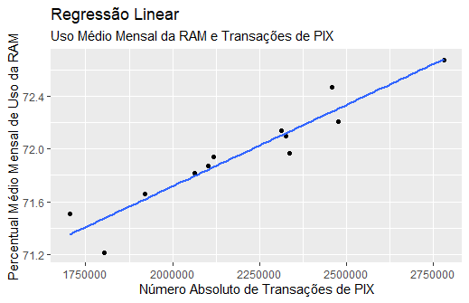
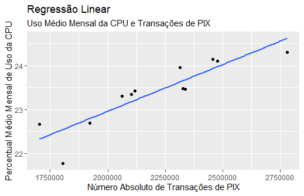

Dashboard Analítica | Sobrecarga de PLCs e PIX em 2024
Coeficiente de Determinação da RAM:
89%
Coeficiente de Determinação da CPU:
78%
CPU e RAM em relação às transações de PIX
Regressões Lineares

